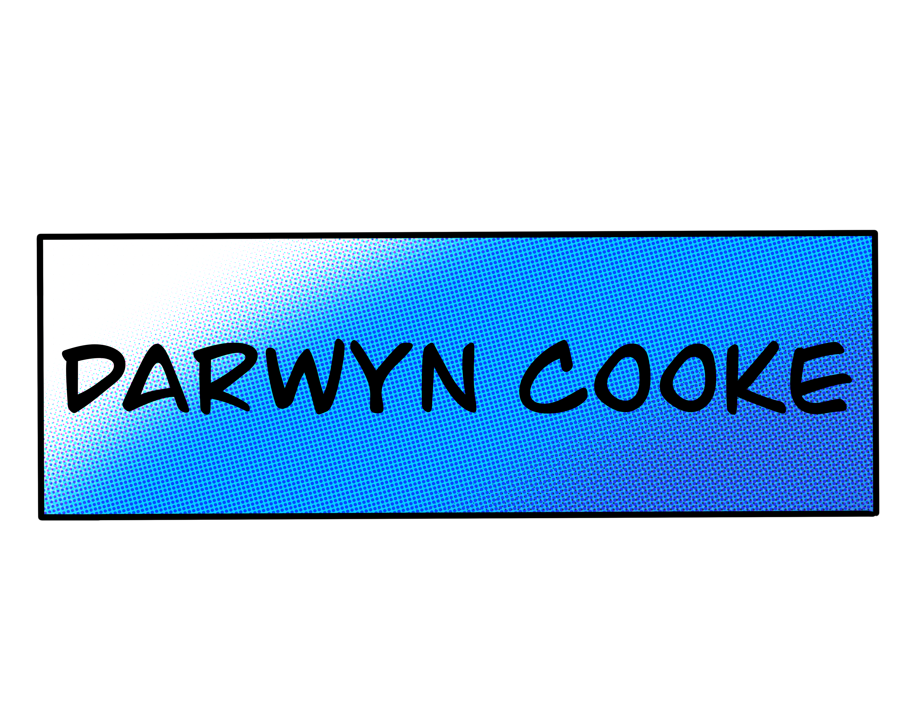

The New Frontier (DC Comics )
Catwoman (DC Comics )
X-statics (Marvel Comics)
Batman; Ego (DC Comics)
Blurb; Cooke's style is the perfect blend of idealzied smoothness and realsitic roughness. His figuees are clear, swfit and defined yet you can feel theyre wight as they glide effotlessly form panel to panel